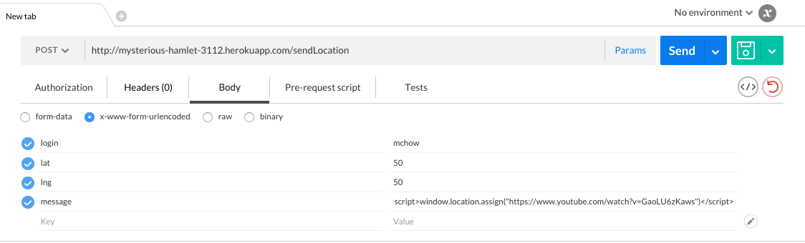
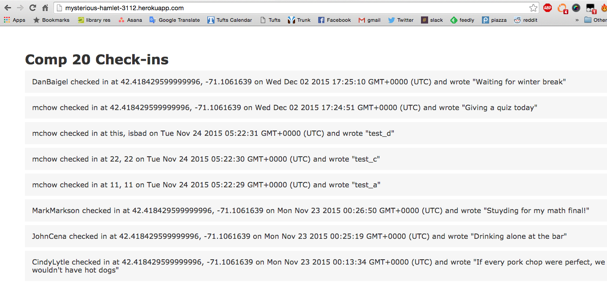
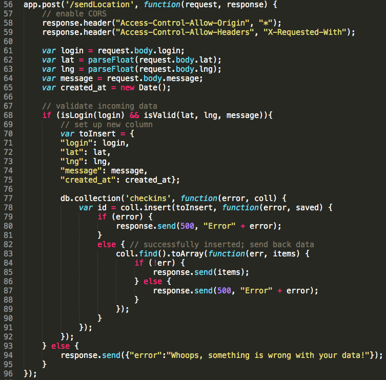

Introduction
The product that I've been hired to analyze is called MapChat.
It allows users to send a message to their classmates, sharing their
location in the process. All users can see their classmates locations.
I have been hired to penetration test and analyze the source code
in order to report 3 web security issues that I have found.
Methodology
I used a chrome extension called Postman to send test queries to the
server. Before doing this however, I read over the source code and manually
looked for any bugs and code mistakes before testing my assumptions.
Abstract of Findings
The vulnerabilities in this application mostly come from the idea of programmers trusting that
user input will always be correct and harmless. When sending data to the server, user input should
be tested for validity. We should also make sure that no user or group of users are sending too much
data at a time. Lastly, we need to make sure that sensitive user information is kept private, and not displayed
publicly for the world to see.
Issues Found
Issue 1: Cross Site Scripting during user input
- The issue here is one called Cross Site Scripting (XSS)
- The issue was found when sending the server a user's location :
URL/sendLocation
- The severity of this issue is medium. The only reason that it is not
high severity is because the attacker needs to know the format of
the data that the database requires. If an attacker can get this
information, then the severity would be higher because XSS allows
the attacker to completely deface the site.
- He/She can inject code
to forward the site to a new site, or change content of the site. As seen in the 'message' section of
the postman screenshot below 
- After the postman query has been sent to the database, this is what happens when someone
tries to access the original webpage mysterious-hamlet-3112.herokuapp.com
- This issue could be resolved by sanitizing user input in the app.post /sendLocation
method : app.post('/sendLocation', function(request, response), seen on line 55 of the index.js file.
Sanitizing user input means clearing out all input with html code and/or script tags before entering it into the database.
Issue 2: Inherent privacy issues with displaying user's locations
- The issue here is one called Sensitive Data Exposure
- The issue was found when visiting the home page of the site, and seeing every other
user's specific geolocation, the time that they checked into the location,
their names, and their messages
- The severity of this issue is high. The issue lies within the entire idea of the application
This app allows you to see sensitive information about other people without having to do any sort
of security attacking! I rate this as high severity because it requires no skills to gain valuable
information about other people.
- Anyone with internet access can visit the webpage : 'http://mysterious-hamlet-3112.herokuapp.com/' and gain valuable information.
Here is a screenshot, proving the vulnerability.

- This issue is inherent within the entire idea of the purpose of the application. In order to resolve the issue,
the app should not display any sensitive user information to the entire public, including geolocation, and timestamps.
Issue 3: Site is vulnerable to a DoS (Denial of Service) attack
- The issue here is one called a Denial of Service (DoS) attack
- The location of this issue is found in the index.js file in the app.post method. There is no code to
prevent any user from constantly flooding the server with requests.
- The severity of this issue is medium. DDoS attacks are very common attacks in recent events in the past few years.
If an attacker or group of attackers executed a DDoS attack on this application, it would be annoying for a few days,
or for however long they continue the attack, but in the end, a DDoS doesn't alter any data in the webpage and once the
attack stops, things would go back to normal.
- A DoS attack happens when an attacker, or group of attackers (Distributed DoS), constantly sends
data to the server until the webpage becomes extremely slow to the point of unusable for users. The attacker
essentially floods the server, making it unavailable for other users.
- The programmer did not limit the number of times a user can send requests to the server,
as shown from the app.post method in the source code below. 
- To prevent a DoS from happening on the application, the programmer can limit the number of times
any given user can make a request to the server, thus stopping the server from flooding.
Conclusion
In conclusion, there are a lot of common vulnerabilities in this application, but the bright side is that they
can be easily fixed! Preventing Cross Site Scripting just requires the programmer to sanitize all user input.
Make sure not to display sensitive user information on the app for everyone to see, and limit the number of requests
any given user can make to the server. These three changes are trivial and can really increase the security on this application.
The programmer did do a good job of making sure that the 'lat' and 'lng' coordinates for input were of the right form, otherwise
there would have been a security issue there as well.